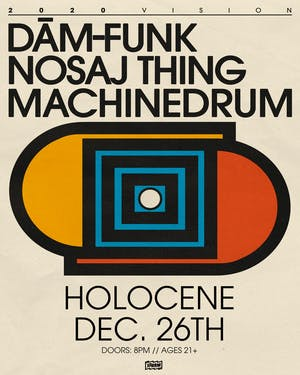

Presented by Holocene : Mark Diamond
"Legends say hummingbirds float free of time carrying hopes of love, joy and celebration. The beautiful presence of hummingbirds reminds us life is rich, beauty is everywhere and every personal connection is important.”
Mark Diamond hopes to carry on a similar legend throughout his life, relationships and songs. At 25 years old, Diamond is a Seattle native who grew up listening to Tom Petty, Hootie & The Blowfish, The Beatles, R.E.M and Robbie Williams with his dad in his 1969 Chevy Malibu.
Diamond has been hard at work on his upcoming project with his new song, “Steady,” leading the way. “This song is a bit of a push and pull, undiluted sexiness I would say.” With his music, Mark wants to make people feel every emotion possible
Monday December 9
Doors: 7 PM / Show: 8 PM // $15.00
Tuesday December 10
Doors: 7 PM / Show: 8 PM // $15-17
Presented by Take Warning : From Indian Lakes
Vannucchi recorded the skeletons of the tracks for Everything Feels Better Now in the basement of a coffee shop that he rented each month for cheap. Further on, with the help of his housemate, he built sound panels and scraped together gear to make a workable home studio. Over the course of 3 months he wrote and recorded around 20 songs before whittling the final number for the album down to 12. From there he traveled to Fairfax Recordings in Los Angeles, aka Sound City Studios, where he worked with producer Kevin Augunas (Delta Spirit, Cold War Kids) and engineer Gavin Paddock on slowly stripping away whatever tracks needed to be replaced from the basement and home studio recordings on the songs.
Everything Feels Better Now was recorded using vintage analog equipment, with no editing on vocals and instrumentation. “Delays were made using tape machines,” says Vannucchi, who played all the instruments heard on the album, “and other effects were made using various vintage equipment leftover from sound city studios. We used vintage synth equipment and vintage drums and guitar amps. When writing and recording this album i was really trying to capture a lo-fi aesthetic, while still retaining a sense of thoughtfulness.”
Presented by Mike Trasher : Shadowgraphs
Shadowgraphs is a neo-psychedelic band from Charlotte, NC, and now based in Portland, OR, comprised of internationally known collage artist Bryan Olson and fellow German cosmonaut Charles Glade (Wils). Both ends met after being introduced through a mutual friend who thought the two shared similar musical interests. Bryan and Wils instantly sparked a connection and songs began to emerge. The two would experiment late nights with tape machines, sharing music and production ideas, and writing songs. After only four months of meeting, an EP titled “Return to Zero” was written and the band was officially born with Ethan Ricks on Bass and Cody Hare on Drums.
“The six-song release is a mesmerizing psychedelic overtaking in the vein of 13th floor Elevators and the golden age of enlightening psychedelic rock. The tracks blend together so stylishly it makes me want to drink spiked strawberry lemonades in the sunshine. “Moonchild” is one of those unattainably perfect nights where the groove is set by smart, steady rhythm and lights fizz around your head even (and especially) when your eyes are closed. “Return to Zero” is straightforward, bluesy and a completely distinctive sound to come out of our Queen City.” –Shirley Griffith CltureMags.”
Wednesday December 11
Doors: 8pm $10-12
Presented by Mike Trasher : Nosaj Thing
Plaid sit right at the very heart of global electronica. In fact there's a very real sense in which Ed Handley and Andy Turner are the perfect encapsulation of what the electronic music of their generation was all about. As Plaid and as two-thirds of The Black Dog, they were central to the "Artificial Intelligence" movement of the early-mid 1990s: alongside their WARP stablemates Autechre, The Aphex Twin, B12 and allies like Richie Hawtin, Speedy J, Kenny Larkin, they brought new rhythmic variation, emotive melody and sensual textures to electronic music, creating a warm and welcoming counterpart to the white heat of the rave explosion.
But where the others would swiftly diverge and head off in many creative directions -- into increasing abstraction or intricacy, or back towards pure techno -- Plaid were the ones who stayed truest to the musical values they started out with. Their sound palette has got broader over the years, their techniques more sophisticated, they increasingly incorporate "real" instruments -- especially with their ever-closer collaborations with multi-instrumentalist Benet Walsh -- but over the years and right up to the utterly gorgeous new album The Digging Remedy, their focus has remained the same: intricate but always grooving rhythm, immersive listening experience and melodies and sound design that connect direct to the emotional centres.
Friday December 28
Doors: 8pm $17-20